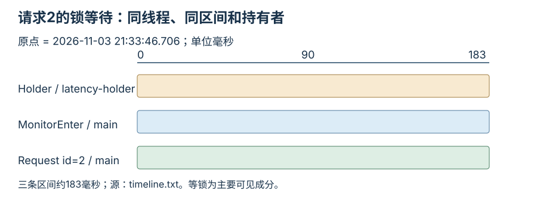
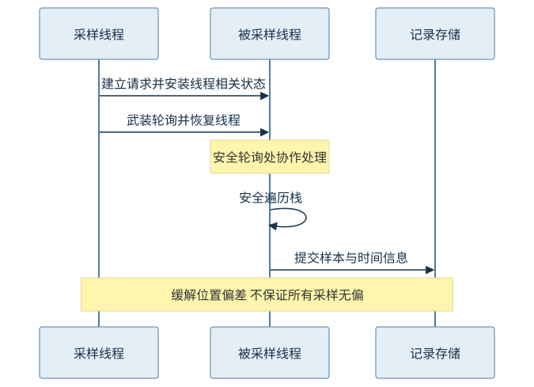
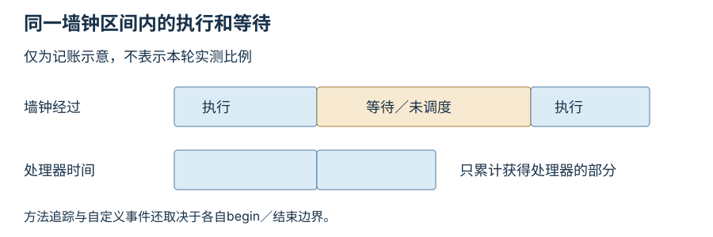

第八篇 · 可观测性、故障分析与性能实践
第34章 飞行记录器的事件、采样与方法追踪
一次慢请求是一段区间。先固定事件的边界与保存条件，再让请求编号、线程、锁、分配和编译活动相互校正，而不是让同时出现的两条记录自动构成因果。
本章以 Java 开发工具包（Java Development Kit，JDK）25.0.5.0.2、Java 虚拟机（Java Virtual Machine，JVM）的 OpenJDK HotSpot 实现为基线，提交1775ea114f64；本机为macOS AArch64。源码阅读 · 运行说明 · 证据索引。
34.1 事件、缓冲与输出
34.1.1 事件提交不等于每次都同步写盘
JDK飞行记录器（JDK Flight Recorder，JFR）在事件产生处编码字段，经线程相关缓冲和共享存储汇集到记录块；元数据、常量池和检查点让离线工具能恢复类型、线程、方法和栈。一次commit不是一次文件系统写入，文件也不是简单的逐行日志。[S01]
JfrStorage::flush根据缓冲类型处理已提交区域和当前事件的迁移，write负责存储写出。线程本地记录减少共享竞争，但依然占用内存、处理器和输入输出资源。记录文件完整性、保存窗口和缓冲压力必须独立核对，不能因为文件存在就推定所有事件都在。

34.1.2 配置决定可见世界
默认与profile配置启用事件和阈值不同；事件threshold可排除短活动，栈深度限制调用上下文，maxage／maxsize限制留存区间。某些事件按周期发出，另一些在操作完成时提交。只看summary数量而不看设置，会把过滤误认为没有活动。
本例从profile开始，显式启用book.Request和book.Holder，监视器进入阈值为1毫秒，MethodTrace阈值为零且只匹配service方法，MethodTiming周期100毫秒，记录上限16兆字节。小范围插桩用于说明边界，没有扩展为全应用追踪。
34.2 持续记录与上下文
34.2.1 持续、导出与流式消费的时效不同
持续记录用有界留存保存最近历史；按需dump取得当前可用区间而不必停止记录；事件流让消费者持续接收已刷新数据，适合及时处理但有刷新与消费延迟。消费者看不到尚未提交或未刷新的事件，流式并不表示零延迟，也不是对磁盘保存策略的替代。
本章用明确开始、停止、dump的短记录形成可复查离线文件，不把它称作已部署持续监控。生产持续记录需事先定义保留、触发、访问权限和数据处理边界；业务上下文宜使用必要的低敏感编号，不能随意把请求负载和秘密写进事件。
34.2.2 用业务区间给底层事件建立坐标
CH34-E01的RequestEvent在进入监视器前begin，在计算完成后commit，requestId区分三次调用。HolderEvent在持锁阶段begin，并在释放前提交；CountDownLatch只确保第二次请求发生在持有者已进入锁之后，不是对记录结果的断言。
因此第二次请求的区间包括等待和计算，自定义事件本身不证明等待原因。还需JavaMonitorEnter的线程、前持有者和业务栈，确认它针对同一个调用。标记放在锁内就会漏掉等锁时间，这类边界差异比显示更多小数位更影响解释。
34.3 跨子系统事件关联
34.3.1 从重叠走向机制支持
本轮第二次请求持续约183毫秒；同一main线程的JavaMonitorEnter也约183毫秒，previousOwner为latency-holder，栈落在service的同步入口。HolderEvent覆盖21:33:46.706到约46.889。源码只在第二次调用前启动持锁休眠，锁等待因此有时间、身份和机制三方面支持。[O01]
记录还包含分配样本、编译事件和执行采样；summary中的GarbageCollection为0。不能把每个分配样本当成全部分配，也不能因为出现编译失败事件就说业务失败：编译任务失败、解释执行和应用异常是不同层次。真实程序正常完成三次请求。

34.3.2 排除解释要写清范围
在本记录启用并保存的事件范围内，未见垃圾收集（Garbage Collection，GC）区间解释该183毫秒；相同线程和锁栈则支持锁等待为主要可见成分。它不能排除系统调度、时钟粒度和记录初始化带来的小量影响，也不证明所有生产慢请求都由锁导致。
要把候选原因进一步压缩，可缩窄持锁区间并按相同口径重新观察，见第36章。未做的改变不能提前写成改善。这里的180毫秒休眠是人为设置的有限教学条件，不能用其比例估计真实服务的锁开销。
34.4 协作式采样
34.4.1 请求位置与安全遍历位置分开
锁定JfrSamplerThread先为目标建立采样请求，安装到线程相关队列并武装轮询；线程在安全轮询处协作处理，安全地遍历栈。JfrThreadSampling::process_sample_request处理排队请求、重建与遍历状态，相关原文见实现摘录。它不是只在全局安全点暂停中每隔固定次数采一次栈。[S02]
请求时记录的信息用于减少把执行位置都挤到轮询位置的偏差，遍历却必须保持栈安全。把“安全点偏差缓解”说成“完全消除任何统计偏差”会过度推论；请求能否及时处理、线程状态、周期和持续长度仍影响样本。

34.4.2 样本比例要带着分母解释
执行样本倾向于描述采样器在可采窗口看到的执行栈，等待、短方法和本地活动有不同可见性。5个样本里某方法占一半，并不表示它占整个请求墙钟的一半。本轮记录很短，不能从五个ExecutionSample排出可靠的全应用热点顺序。
第35章另用五秒有限忙等得到连续栈和432个热点样本，更适合说明持续计算。两份记录采用的窗口不同，不能混合成同一个百分比。统计画像始终要标注事件类型、筛选条件和窗口，再解释机制。
34.5 方法计时、追踪与处理器时间画像
34.5.1 墙钟、处理器与调用边界不是同一计量
墙钟经过时间包含执行、等锁、休眠与调度；中央处理器（Central Processing Unit，CPU）时间只计实际获得处理器的部分。MethodTrace记录选中调用区间，MethodTiming聚合调用数与最小／平均／最大时间；二者不是按CPU时间随机采样的同义词。[S01、S02]
本轮首次service追踪约38.7毫秒，而内部Request仅2.75毫秒，记录中还有JFR内部元数据锁活动。第二次两者都约183毫秒，第三次分别约1.18与1.12毫秒。这表明探针边界不同、首次初始化可显著扰动短方法；聚合里曾出现invocations=0与N/A，也不应当读成零耗时。

34.5.2 范围、状态和平台分别核查
25版方法计时和追踪通过字节码插桩实现，筛选表达式可以定位类、方法或注解，范围过宽会增加调用路径成本和输出。CPU时间画像在25版是实验性Linux特性，本机macOS没有作该特性的运行声明；普通ExecutionSample不是它的替代结果。[S03]
本章实际记录MethodTrace和MethodTiming，说明这两个事件在本发行版可用；这不保证旧分析器拥有对应专用页面。读取新事件时先检查元数据和通用事件浏览器，专用热点视图没有条目并不意味着原始事件不存在。
34.6 记录分析工具
34.6.1 先摘要和元数据，再筛选和聚合
jfr summary核对记录区间与事件数，metadata查看字段及设置，print按事件筛选并保留堆栈，view把事件按预定义查询聚合。聚合隐藏了具体时序，因此“热点表最上面的方法”不能直接定位某一次请求。分析保留原始文件及命令，避免只留下截图。[S01]
本轮summary保留DataLoss计数0、5个执行样本、14个分配样本和1个编译事件；timeline筛选自定义事件、进入锁与方法追踪，未把其余事件删除。DataLoss为0只说明该记录没有报告该事件，不是对全部观测无丢失的普遍保证。
jfr summary latency.jfr
jfr metadata --events "book.*,jdk.MethodTrace,jdk.MethodTiming" latency.jfr
jfr print --events "book.*,jdk.JavaMonitorEnter,jdk.MethodTrace,jdk.MethodTiming" latency.jfr
jfr view hot-methods latency.jfr
34.6.2 图形工具用来关联，不代替原始记录
JDK Mission Control（JMC）用于查看时间选择、线程、锁和栈，再返回具体事件确认字段。本次按用户指令从9.1.1升级为9.1.2，启动配置显式选择JDK25，避免macOS误选旧JavaVM.framework。安装、启动和记录解析是三个不同结果，各自记录。
图形页面的最终实读见本章浏览器及JMC记录。通用事件能保留自定义字段，规则评分受窗口、配置与工具版本影响；短教学记录的告警不能直接转成生产修复建议。原始latency.jfr与命令输出是追溯入口，页面截图仅作阅读证据。
观察与边界
本章三个请求正常完成。请求2的主要可见区间由锁等待解释，首次追踪开销和未执行的Linux实验特性明确保留。原始记录没有经过scrub过滤，精选文字输出另存。
回顾与思考
- 为什么把begin放在synchronized内部会低估请求时间？
- 183毫秒方法区间能否当成183毫秒CPU时间？
- 新的采样方式如何同时追求栈安全和减轻位置偏差？